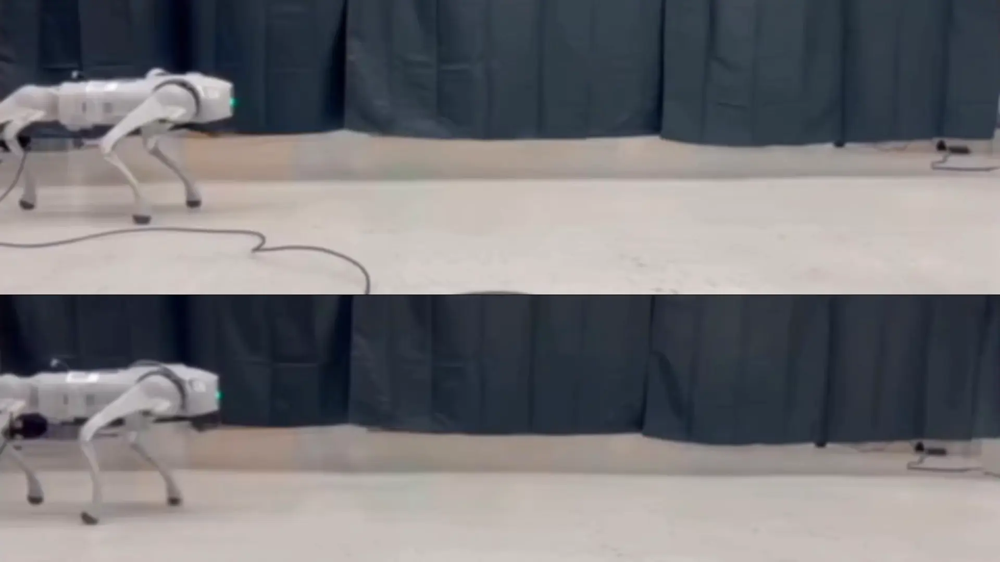
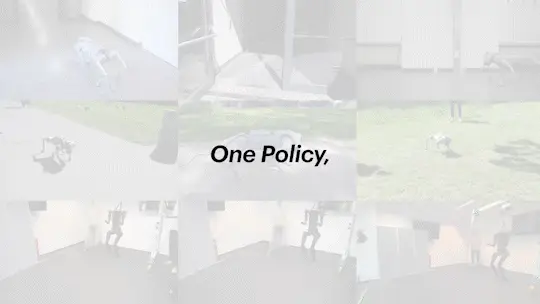
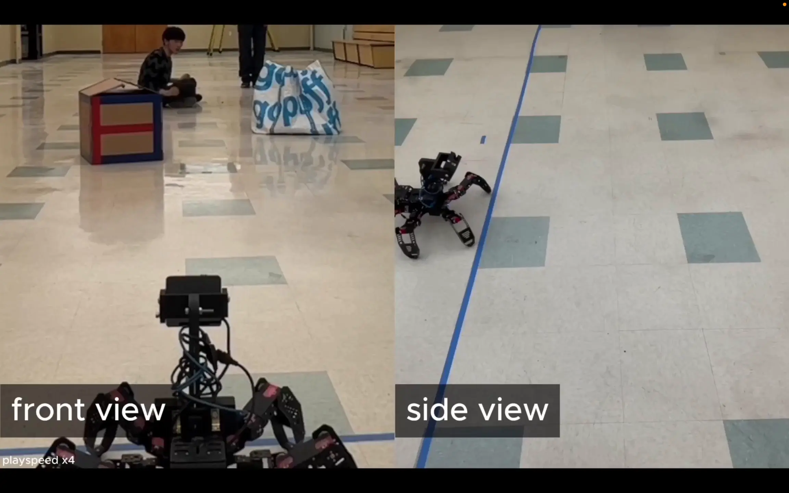

Research
My research focuses on cross-embodiment learning and reinforcement learning for robot locomotion across diverse platforms, including humanoid, quadruped, and hexapod robots. I aim to develop learning agents that can leverage data from heterogeneous tasks, generalize across different physical embodiments, and scale effectively with increasing data and experience. More broadly, I am interested in enabling robots to acquire versatile skills that transfer across a wide range of environments. Some important papers are highlighted.
|
|

|
Online Embodiment Adaptation for Quadrupedal Locomotion
Dichen Li*, Bo Ai*, Nico Bohlinger, Jan Peters, Henrik I. Christensen, Hao Su
IROS, 2026 (submitted)
An online adaptation framework that infers embodiment parameters from interaction history for robust quadrupedal locomotion under hardware changes.
|
|

|
Towards Embodiment Scaling Laws in Robot Locomotion
Bo Ai*, Liu Dai*, Nico Bohlinger*, Dichen Li*, Tongzhou Mu, Zhanxin Wu, K. Fay, Henrik I. Christensen, Jan Peters, Hao Su
CoRL, 2025
project page
/
arXiv
Embodiment scaling laws for robot locomotion across humanoid, quadruped, and hexapod robots using large-scale cross-embodiment data.
|
|

|
Versatile Locomotion Skills for Hexapod Robots
Tomson Qu, Dichen Li, Avideh Zakhor, Wenhao Yu, Tingnan Zhang
IROS, 2024
arXiv
Learning robust and versatile locomotion skills for hexapod robots through reinforcement learning and sim-to-real transfer.
|
|
News
|
Mar 2026 — Our paper Online Embodiment Adaptation for Quadrupedal Locomotion was submitted to IROS 2026.
Feb 2026 — I completed my M.S. in Electrical and Computer Engineering at UC San Diego.
Dec 3 – Dec 7, 2025 — I will attend NeurIPS 2025 in San Diego, California.
Sep 26 – Oct 1, 2025 — I will attend CoRL 2025 in Seoul, South Korea.
Jul 2025 — Our paper Towards Embodiment Scaling Laws in Robot Locomotion was accepted to CoRL 2025.
Oct 2024 — I joined the SU Lab at UC San Diego as a graduate research intern.
Jul 2024 — I received my B.Eng. in Automation from Xi'an Jiaotong University (Qian Xuesen Honors College).
May 2024 — Our paper Versatile Locomotion Skills for Hexapod Robots was accepted to IROS 2024.
|
|
Personal
|
Outside of research, I enjoy playing basketball and exploring new hiking trails.
|
“We can only see a short distance ahead, but we can see plenty there that needs to be done.”
— Alan Turing
|
|
{kind=link}